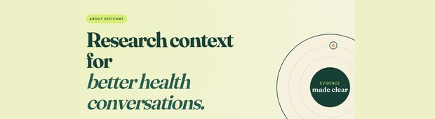
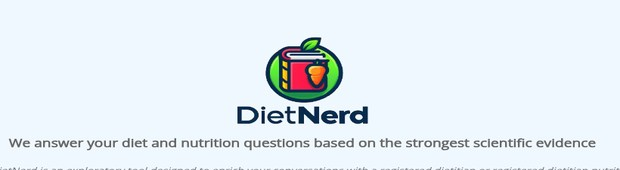
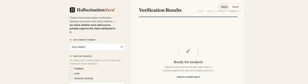
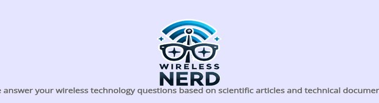
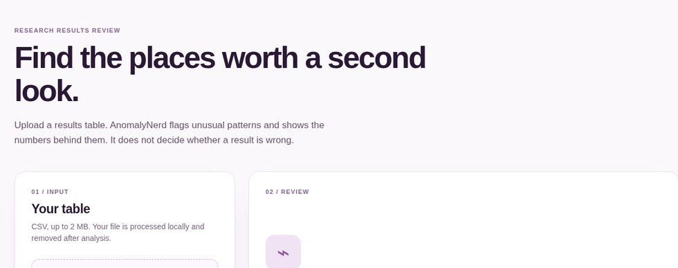
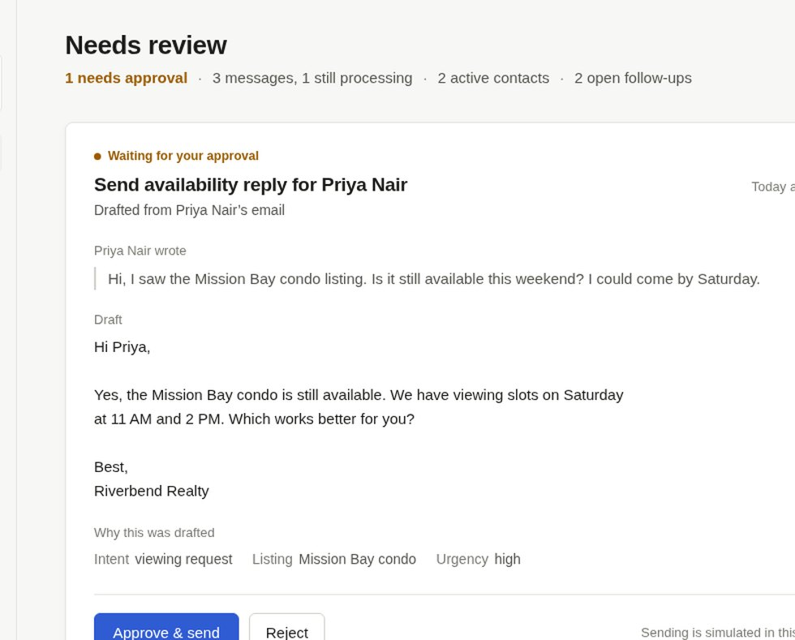
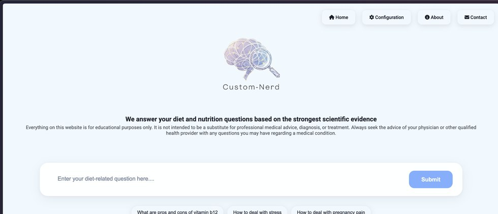

DietChat
A conversation about food, evidence and your questions.

A conversation about food questions
Ask about meals, ingredients, habits and the evidence behind an answer. Follow up as your question changes.
What should I look for in this food claim?
DietNerd
Take a question deeper into diet research.

Go deeper into diet research
Explore a nutrition question through research, compare findings and see what remains uncertain.
What does the research say about this diet?
NewsNerd
Follow a story back to its sources.
Trace a story to its sources
Look beyond a headline. Examine where a claim came from and which sources support it.
What are the original sources for this story?
HallucinationNerd
Check claims against the references behind them.

Check an answer against references
Review a claim and its citations side by side, then look for gaps between the wording and the evidence.
Do these sources support this statement?
InvestorNerd
Explore companies and the evidence behind an idea.
Explore the evidence behind an idea
Investigate a company or investing question through the available sources. Compare the case with its uncertainties.
What supports this company thesis?
PatentNerd
Find a clearer path through patent knowledge.
Explore patent knowledge
Start with an invention or technical question, then look through patent information for related ideas.
What patents relate to this idea?
WirelessNerd
Make sense of the systems that keep us connected.

Understand wireless systems
Explore how wireless systems work, from signals and networks to the technology that keeps devices connected.
How does this wireless system work?
AnomalyNerd
Spot unusual changes in a dataset.

Find what changed.
A new project being built to inspect datasets and flag patterns that deserve a closer look.
Under construction
OperationsNerd
Explore operational workflows and data.

Operations, made clearer.
An in-progress project. More detail will follow when the site is ready.
Under construction
CustomNerd
Build a domain-specific research assistant from configurable parts.

Adapt the engine to your subject
A locally run, configurable research assistant framework. Explore the source, setup and domain examples in its GitHub repository.
How would this work for my topic?
WirelessChat
Ask questions about wireless systems and get evidence-backed answers.
Chat about wireless systems
A chat interface for wireless questions, from signals and networks to the technology that keeps devices connected.
How does this wireless system work?